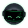

…
El token se copia desde el icono del robot en la bandeja de Windows → Copiar token para la extensión. El robot te pedirá permiso para cada sitio y para acciones delicadas (enviar, comprar, borrar…). Nunca toca contraseñas ni tarjetas.

El token se copia desde el icono del robot en la bandeja de Windows → Copiar token para la extensión. El robot te pedirá permiso para cada sitio y para acciones delicadas (enviar, comprar, borrar…). Nunca toca contraseñas ni tarjetas.